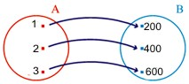
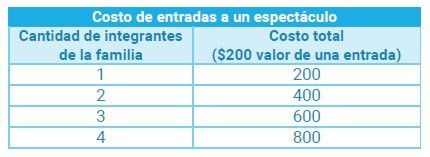
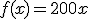
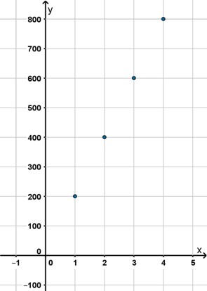
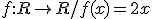
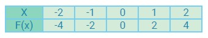
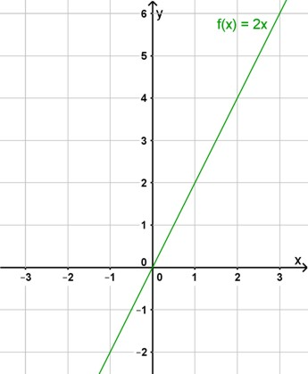

Representación de funciones
Lenguaje coloquial
Las funciones pueden ser representadas por medio de un lenguaje coloquial, es decir, mediante una explicación con palabras informales y cotidianas. Esto es: mediante una descripción detallada del comportamiento de cierta variable a partir de la cual se pueden determinar otras variables.
Por ejemplo: la definición en palabras de una función y = f (x) es: “la función f determina el precio total de entradas, a un espectáculo, que debe pagar una familia dependiendo de su cantidad de integrantes y considerando que una entrada cuesta $ 200”.
Diagrama Sagital
Se denomina diagrama sagital al que se construye para representar las funciones utilizando dos conjuntos (líneas curvas cerradas que contienen sus elementos y que se conocen con el nombre de diagramas de Venn) para indicar el conjunto dominio y el conjunto de llegada. Los elementos que se relacionan por la función se unen con una flecha.
En la figura observamos que el conjunto A representa al conjunto dominio y el conjunto B al conjunto imagen de la función.
En dicha figura podemos ver una posible representación de la función f planteada anteriormente. En el conjunto A representamos la cantidad de integrantes de la familia y en el conjunto B, el costo de las entradas.
Tablas
Una función puede ser representada por una tabla donde la primera columna representa a los elementos del dominio y la segunda columna representa a los elementos del conjunto imagen. Cada fila representa la relación de correspondencia de un elemento del dominio con el de la imagen.
Este tipo de representación, al igual que el diagrama sagital, permite ver rápidamente las relaciones establecidas entre los elementos del dominio con su respectiva imagen, pero no son adecuados cuando estos conjuntos tienen infinitos elementos.

Fórmula algebraica
Una función puede estar modelizada por medio de una fórmula. En nuestro ejemplo sería 
En este caso, el dominio está representado por todos los valores que puede tomar x para los cuales se puede calcular f(x), que se corresponde con la imagen.
Gráficos
Al representar una función por medio de un gráfico, utilizaremos el sistema de coordenadas cartesianas, donde al eje horizontal lo llamamos eje de las abscisas y representa a la variable independiente, y el eje vertical lo llamamos eje de las ordenadas y representa a la variable dependiente.
En este tipo de representación, el eje de las abscisas representa a los elementos del dominio y el eje de las ordenadas representa a las imágenes. Estas relaciones están representadas por un par ordenado (x, f(x)).
En el punto (x, y), que se marca en el plano para obtener el gráfico de una función, importa el orden; de allí el nombre de par ordenado. La primera coordenada x es el valor de la variable independiente y esta pertenece al dominio de la función. La segunda coordenada y verifica y= f (x) y es la respectiva imagen.
Siguiendo con nuestro ejemplo, en la gráfica que representaría a la función solo representamos los pares ordenados, ya que el Dominio de la función solo puede tomar valores naturales, porque nos estamos refiriendo a número de personas.
Veamos un ejemplo:
Modelizar la función que asigne a cada número su doble.
Expresión algebraica: f(x) = 2x
Definición:

Tabla
En este caso solo representamos algunos de los valores ya que el dominio y la imagen son conjuntos infinitos.

Gráfica

Obra publicada con Licencia Creative Commons Reconocimiento Compartir igual 4.0